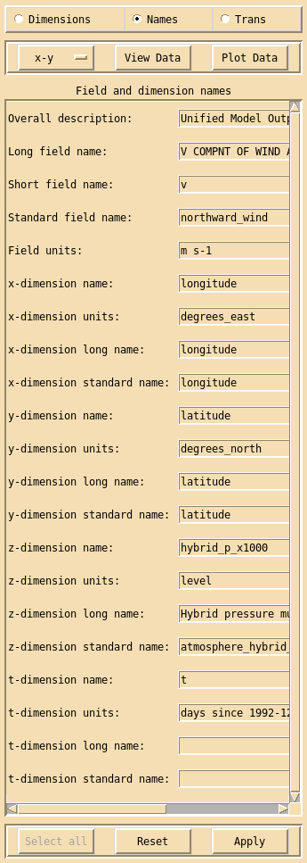

Field and dimension names interface¶
Clicking on the Names button in the main xconv window brings up the Field and dimension names interface.
The Field and dimension names interface is used to change the long, short, standard and unit names for the currently selected field and it’s dimensions. If long, short, standard or unit name is changed for the x, y or z dimension then any other fields which have the same dimension names and values, will also be changed.
The Apply button must be clicked for any name changes to take effect. The Reset button will reset the field, dimension and unit names to either their initial state if Apply has not yet been used or to the state they were in when Apply was last used.